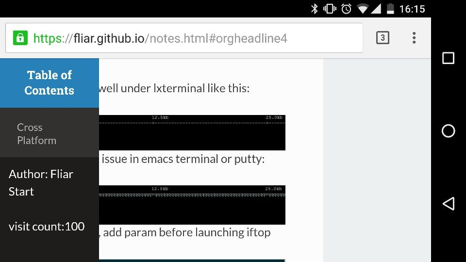
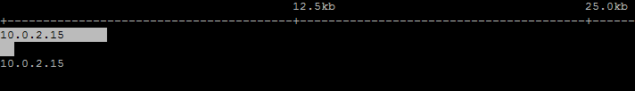
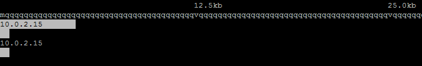

Notes
Table of Contents
Cross Platform
emacs
my installed package
for the record when i need to reinstall emacs
| Package Name | Description |
|---|---|
| ahk-mode | auto hot key script mode, windows only |
| async | c? |
| cmake-mode | cmake mode |
| company | company mode |
| flymake-lua | |
| helm | helm mode |
| helm-company | helm interface for company |
| helm-core | |
| helm-flymake | |
| helm-gtags | helm interface for gnu global |
| helm-swoop | |
| htmlize | html coloring for org export |
| ivy | c? |
| lua-mode | editing lua |
| multi-term | terminal inside emacs |
| org | i'm writing this with org mode |
| popup | c? |
| swiper | c? |
org-mode
local variables block
init in-buffer variables:
# Local Variables: # eval: (setq-local aabbcc t) # End:
this block need putting at eof, within 3000 chars.
- m-x revert-buffer to reload modifications
- this block will be evaluated on loading
sub/super scripts
- '^' "_" are used to indicate super- and subscripts.
- by default the following chars will be treated as sub/superscripts:
NCURSES_NO_UTF8_ACS will be converted to NCURSESNO_UTF8_ACS
this is sometimes annoying. to prevent this, add these variables:
(setq-local org-use-sub-superscripts '{}) ;sub/superscripts must be wrapped with {} (setq-local org-export-with-sub-superscripts '{}) ; so are the export scripts
line break export
simply appent "\\" to end of line:
- type "<s" then <tab> to insert a source block. \\ usually a c-g is required to quit company auto completion.
insert BEGIN block: easy template
- type "<s" then <tab> to insert a source block.
usually a c-g is required to quit company auto completion. - for more easy template: click here
customize source block style
create a css for src:
pre.src { font-family: sans-serif; font-size: 95%; color: #93a1a1; background-color: #002b36; padding: 2px; border: #a7a7a7 1px solid; line-height: 120% } div.src { border: #a7a7a7 1px solid; background-color: #002b36; padding: 2px; overflow: auto; } div.src { font-family: sans-serif; font-size: 95%; color: #93a1a1; padding: 0px; line-height: 120%; margin: 0px; } div.src p { font-family: sans-serif; font-size: 95%; color: #93a1a1; padding: 0px; line-height: 120%; margin: 0px; }
add HTML head to org file
#+HTML_HEAD: <link rel="stylesheet" type="text/css" href="src.css" />
link to external org file headline
- the whole org project must be exported: c-c c-e P x
link syntax(remove comma)
[,[file: name.org ::*headline name][link name]]
headline name should be exact headline name in name.org
- link can be edited with c-c c-l
eval source block and export
make a source block, specifying source and result type
#+BEGIN_SRC sh :result code lsb_release -a #+END_SRC
c-c c-c to run the source
#+BEGIN_SRC sh :result code lsb_release -a #+END_SRC #+RESULTS: #+BEGIN_SRC sh Distributor ID: Ubuntu Description: Ubuntu 16.04 LTS Release: 16.04 Codename: xenial #+END_SRC
make sure language is loaded in org-babel-do-load-languages
disable eval on export:
#+PROPERTY: header-args+ :eval no-exportor eval will be prompted every time you export
export both source and result: use ":export both" at block header
#+BEGIN_SRC sh :export both lsb_release -a #+END_SRC
or set to header-args
#+PROPERTY: header-args+ :exports both
Web Site
fliar.github.io
read the org css fine tune
the mobile view of read the org looks badly like this:

to solve this, change all 300px to percentage(eg.23%), add position, and left to content:
#content{ position:relative; background:#fcfcfc; height:100%; left:23%; /*margin:auto;*/ max-width:75%; min-height:100%; padding:1.618em 3.236em; }
not very well but works:

This web site does not supply ownership informatio
outsourcing css caused this issue, simply move css to github solved this problem
#+HTML_HEAD: <link rel="stylesheet" type="text/css" href="css/htmlize.css"/> #+HTML_HEAD: <link rel="stylesheet" type="text/css" href="css/readtheorg.css"/>
firebase
RESTful API basic:get data
simply using curl, add .json to the url address: print=pretty makes it more readable.
curl 'https://xxxxxx.firebaseio.com/pub.json?print=pretty'{ "error" : "Permission denied" }auth param will bypass the rules for db: for instance, if your db secret is 123 (could be found in settings/database),rules for your db is like this:
"pub": { ".read": false, ".write": false, },when executing:
curl 'https://xxxxxx.firebaseio.com/pub.json?auth=123&print=pretty'{ "001" : 99, "abc" : "aaa" }your data will show as well
Linux
Tools
iftop
display issue
iftop works well under lxterminal like this:
 but has char issue in emacs terminal or putty:
 to solve this, add param before launching iftop
sudo NCURSES_NO_UTF8_ACS=1 iftop
bash
aliased variable not work in sudo command
assuming 'iftop' is aliased to be 'NCURSES_NO_UTF8_ACS=1 iftop' to avoid display issue
this will not work using 'sudo iftop', but 'sudo NCURSES_NO_UTF8_ACS=1 iftop' works.
to fix this, add an alias for 'sudo':
alias sudo='\sudo '
note that there's no space in the equation, the backslash prevents rescursive 'sudo' alias.
Distributions
Ubuntu
shell config: .bashrc
aliases(or put in .bashaliases):
alias iftop="NCURSES_NO_UTF8_ACS=1 iftop"
terminal colors:
export TERM=xterm-256color
global config: /etc/profile
path:
export PATH=$PATH:/usr/local/go/bin
auto run: /etc/rc.local
show version
lsb_release -a
Distributor ID: Ubuntu Description: Ubuntu 16.04 LTS Release: 16.04 Codename: xenial
auto run on startup
- edit /etc/rc.local, add command to run on startup:
nohup sh -c "/home/fliar/downloads/lantern_linux_amd64 -addr 0.0.0.0:8888 &> /dev/null" &> /dev/null exit 0 # last line of rc.local
- note that rc.local should end with a value(exit 0)
Windows
Tools
Auto Hot Key
nested if statement
nested if is not allowed in ahk script:
if a { if b { ... } }
you can wrap it to another function:
fb(b) { if b { ... } } if a { fb(b) }